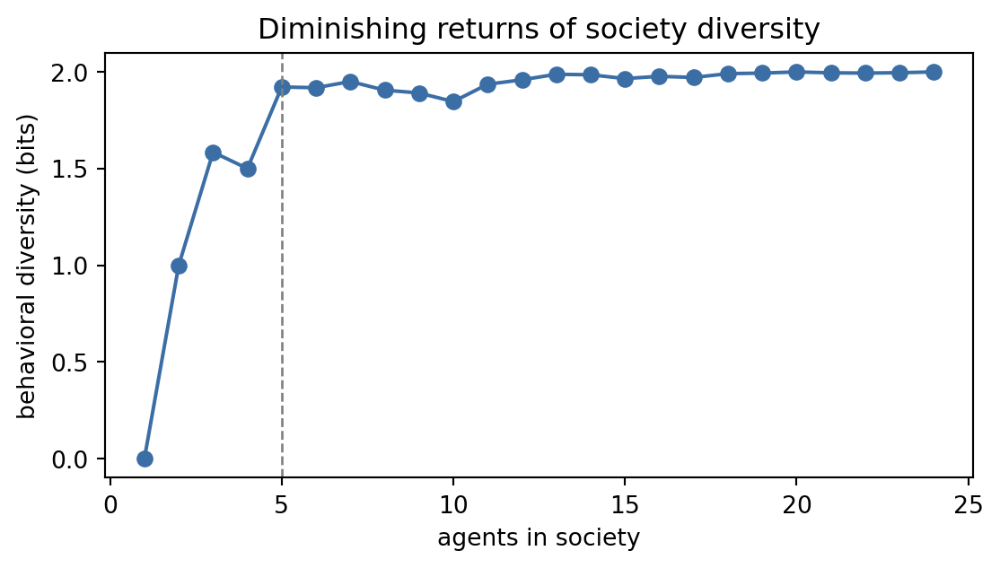
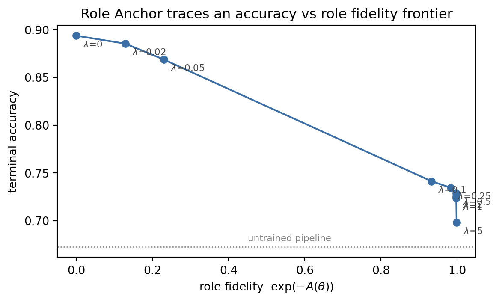

A single large language model, no matter how capable, suffers a fundamental limitation: it produces one stream of reasoning from one implicit perspective. When a model writes code and then reviews it in the same forward pass, the review inherits all the biases and blind spots of the generation step. Multi-agent systems address this by distributing cognitive labor across several model instances, each constrained to a role, a perspective, or a stage of a pipeline. The resulting architecture enables specialization, parallelism, adversarial cross-checking, and iterative refinement that a monolithic model cannot replicate.
229.1 1. Why Multiple Agents
229.1.1 1.1 Division of Labor and Specialization
Human organizations achieve reliability and quality through role differentiation. A software team separates product requirements, architecture, implementation, code review, and testing because each task demands different expertise and, critically, because the person writing code is ill-suited to evaluate whether requirements were met. The same logic applies to LLM systems. An agent whose system prompt constrains it to the role of security auditor will surface different vulnerabilities than the agent that wrote the code, even if both use the same underlying model weights.
Specialization in multi-agent LLM systems is implemented by fixing a role-specific system prompt for each agent. The system prompt encodes constraints (“you only flag security issues, not style”), domain vocabulary (“assume OWASP Top 10 as your framework”), and output format (“respond with a numbered list of CVEs”). Because transformer models are highly sensitive to context, a well-crafted system prompt reliably shifts the model’s distribution toward the desired behavior.
229.1.2 1.2 Parallelism
Tasks with independent subtasks are natural candidates for parallel agent execution. Generating multiple candidate solutions, searching several knowledge sources simultaneously, or producing first drafts of several document sections in parallel all benefit from concurrent agent invocation. The total wall-clock time for \(N\) independent tasks with expected duration \(\mu\) becomes \(\mu\) rather than \(N\mu\) when agents run in parallel, at the cost of \(N\) times the token budget.
229.1.3 1.3 Adversarial Checking and Debate
Perhaps the most important motivation for multi-agent systems is adversarial verification. When one agent produces an answer and a second agent is explicitly prompted to find flaws, the second agent’s critique is statistically independent of the first agent’s generation, conditioned only on the text content of the answer. This independence breaks the autocorrelation that plagues single-model self-critique.
Define the probability that a single agent makes an undetected error as \(\epsilon\). If a second independent agent reviews the output and catches errors with probability \(p_{\text{detect}}\), the residual error rate falls to \(\epsilon(1 - p_{\text{detect}})\). With \(k\) independent reviewers each catching errors independently, the residual error rate is \(\epsilon \prod_{i=1}^{k}(1-p_{\text{detect},i})\). For \(p_{\text{detect}} = 0.7\) and \(k = 2\), this reduces \(\epsilon\) by a factor of \(0.09\), nearly an order of magnitude.
229.2 2. ChatDev: Simulating a Software Company
Qian et al. (2023) introduced ChatDev, a system that instantiates a virtual software company populated entirely by LLM agents. The company comprises roles including CEO, Chief Product Officer, Chief Technology Officer, Programmer, Code Reviewer, and Tester. Each agent is a separate LLM instance with a fixed role-defining system prompt.
229.2.1 2.1 The Inception Prompting Technique
The core challenge in multi-agent chat is maintaining role consistency while injecting task-relevant context. A naive approach would alter the system prompt for each task, but this creates prompt-injection risks and inconsistency. ChatDev instead uses what the authors call “Inception” prompting: the system prompt is frozen and defines role identity, while the task description and inter-agent messages are injected into the conversation history as user turns. The agent thus “learns” about the current task through the conversation, not through modification of its identity.
Formally, let \(s_r\) be the fixed system prompt for role \(r\). The conversation history at step \(t\) is \(H_t = \{(u_1, a_1), \ldots, (u_t, a_t)\}\) where \(u_i\) is a user-role message and \(a_i\) is an assistant-role response. Each agent generates:
\[a_{t+1} = \text{LLM}(s_r, H_t, u_{t+1})\]
The role identity in \(s_r\) remains fixed throughout the project, while the accumulating \(H_t\) carries the full project context. This prevents role collapse while enabling contextual adaptation.
229.2.2 2.2 Structured Communication Protocol
Agents in ChatDev communicate through a structured phase-based protocol. The software development lifecycle is divided into phases: Designing (CEO and CPO produce requirements), Coding (CTO and Programmer implement), Code Review (Programmer and Reviewer iterate), and Testing (Programmer and Tester iterate on identified bugs). Each phase is a separate multi-turn dialogue between two designated agents. The output of each phase becomes input to the next, creating a waterfall-like pipeline with LLM-mediated handoffs.
This phase structure prevents the combinatorial explosion of all-to-all communication and enforces a directed acyclic graph of information flow, reducing the risk of circular dependencies and echo chambers.
229.3 3. AutoGen: Flexible Conversational Agents
Wu et al. (2023) introduced AutoGen, a framework that generalizes multi-agent collaboration to arbitrary conversation topologies. Rather than prescribing a fixed organizational structure like ChatDev, AutoGen provides composable primitives that developers combine to build application-specific agent networks.
229.3.1 3.1 Core Abstractions
The fundamental unit in AutoGen is the ConversableAgent: an entity that can send messages, receive messages, and optionally execute code or call tools. Two specializations are particularly important. The AssistantAgent is an LLM-backed agent configured to write code, answer questions, and produce structured outputs. The UserProxyAgent acts as a proxy for human oversight, executing code in a sandbox, relaying results back to the assistant, and optionally soliciting human input at configurable checkpoints.
The UserProxyAgent exposes a human_input_mode parameter with three values: ALWAYS (prompt a human on every turn), NEVER (fully autonomous), and TERMINATE (prompt only when the agent signals completion). This configurable human-in-the-loop mechanism allows the same agent architecture to be deployed across a spectrum from fully supervised to fully autonomous operation.
229.3.2 3.2 Conversation Topologies
AutoGen supports several topologies beyond the simple two-agent dialogue. In group chats, a GroupChatManager coordinates multiple agents by selecting the next speaker according to a policy (round-robin, LLM-selected, or custom). Sequential chats chain independent two-agent conversations, passing a summary of each conversation as context to the next. Nested chats allow one agent to spawn a sub-conversation with other agents as a subroutine, enabling hierarchical task decomposition.
The group chat manager’s speaker selection policy can itself be an LLM prompt, making the coordination logic adaptive. Given the current conversation history \(H\) and the set of available agents \(\mathcal{A}\), the manager solves:
\[a^* = \arg\max_{a \in \mathcal{A}} \text{LLM}(\text{``Given the conversation, which agent should speak next?''}, H)\]
This meta-level reasoning enables dynamic role assignment that responds to the evolving state of the task.
229.4 4. MetaGPT: Standard Operating Procedures as Agent Programs
Hong et al. (2023) observed that the primary failure mode of unconstrained multi-agent systems is information loss at handoff boundaries. When agents communicate in natural language, structured information degrades: an agent that produces a precise entity-relationship diagram in its reasoning may transmit only a prose summary to the next agent, losing the formal structure. MetaGPT addresses this by encoding software engineering Standard Operating Procedures (SOPs) into the agent workflow and requiring structured, typed outputs at each stage.
229.4.1 4.1 Role-Structured Output Schema
Each MetaGPT agent role produces a document defined by a schema rather than free text. The Product Manager produces a Product Requirements Document (PRD) with sections for goals, user stories, competitive analysis, and success metrics. The Architect produces a system design document with class diagrams, sequence diagrams, and file structure. The Engineer produces implementation code. The QA Engineer produces a test suite. These structured outputs are stored in a shared message pool.
229.4.2 4.2 Publish-Subscribe Communication
The shared message pool implements a publish-subscribe pattern. Each agent publishes its structured output to the pool tagged with its role and document type. Downstream agents subscribe to the document types they require: the Architect subscribes to PRDs, the Engineer subscribes to design documents, the QA Engineer subscribes to both design documents and code. This explicit subscription graph replaces the implicit assumption that all agents have access to all information, reducing context length and focusing each agent’s attention on relevant inputs.
Let \(M_r\) be the set of message types produced by role \(r\), and \(S_r\) be the set of message types to which role \(r\) subscribes. The information available to agent \(r\) at step \(t\) is:
This selective information access prevents context bloat while preserving the information dependency graph required for coherent collaboration. Hong et al. (2023) report that MetaGPT achieves 85.9% pass@1 on HumanEval when used for code generation tasks, attributed to the structured handoffs that preserve semantic content across role boundaries.
229.5 5. Multi-Agent Debate
Du et al. (2023) proposed a multi-agent debate protocol for improving factuality and reasoning. The protocol proceeds in rounds: in round \(t=0\), each of \(N\) agents independently generates an answer to a question. In subsequent rounds \(t = 1, \ldots, T\), each agent reads all agents’ answers from round \(t-1\) and produces a revised answer. After \(T\) rounds, the final answers are aggregated by majority vote or by a designated judge agent.
229.5.1 5.1 Why Debate Improves Reasoning
The information-theoretic motivation is that the initial answers form a sample from the LLM’s output distribution. Different random seeds, sampling temperatures, or minor prompt variations produce diverse initial answers. When an agent reads answers that differ from its own, it is exposed to reasoning paths it did not generate, which can trigger recognition of its own errors. The debate process implements a form of iterated best-response:
where \(s_i\) is agent \(i\)’s system prompt, \(q\) is the question, and \(\{a_j^{(t-1)}\}\) is the set of all agents’ previous answers. Over rounds, agents converge toward answers consistent with the majority reasoning chain, while agents with outlier positions must either articulate compelling arguments or update their position.
229.5.2 5.2 Empirical Results
Du et al. (2023) evaluate multi-agent debate on biography generation (factuality measured against Wikipedia), the MATH benchmark, and chess move prediction. With \(N = 3\) agents and \(T = 2\) debate rounds, factuality on biography generation improves by approximately 11 percentage points over a single-agent baseline. On MATH, accuracy improves from 51.3% to 60.4%. The improvements are largest on questions where agents initially disagree, confirming that debate is most valuable when the initial answer distribution is multimodal.
229.5.3 5.3 Aggregation Strategies
Simple majority voting over final-round answers is a strong baseline: if the probability of any single agent producing the correct answer is \(p\) and agents are independent, the probability that a majority of \(N\) agents is correct is \(\sum_{k=\lceil N/2 \rceil}^{N} \binom{N}{k} p^k (1-p)^{N-k}\), which exceeds \(p\) whenever \(p > 0.5\). A judge agent that reads all final answers and selects the best-reasoned one can outperform majority vote when \(p < 0.5\) for the majority of agents, since the judge can identify quality signals beyond mere agreement.
229.5.4 5.4 Why Voting Converges: The Hive-Mind Equivalence
Section 5.1 to 5.3 describe what debate-and-vote does; a striking theoretical result explains why it should converge on the best answer at all, even though no individual agent is ever told which answer is correct. Soma et al. (2024) study an unrelated-looking system, honey bee swarms choosing a new nest site, and show that its imitation dynamics are exactly a reinforcement-learning algorithm. The mapping onto multi-agent debate is direct once stated: a candidate final answer plays the role of a nest site (an action \(a\) among \(n\) options), an agent’s current answer is its type, and “broadcasting a nest site more enthusiastically the better it seems” is exactly what a debating agent does when it argues for its own answer with more or less conviction.
The weighted voter model. Let \(\pi = (\pi_1, \dots, \pi_n)\) be the population vector, the fraction of the \(N\) agents currently holding each of the \(n\) candidate answers, \(\sum_a \pi_a = 1\). An agent holding answer \(a\) draws a noisy quality estimate \(r_a \sim r(a, \pi) \in [0,1]\) (in the debate setting: how convincing its own reasoning for \(a\) seems on reflection) and broadcasts \(a\) at a rate proportional to \(r_a\). An agent that encounters a neighbor holding answer \(b\) switches to \(b\) with probability proportional to \(b\)’s broadcast strength, i.e. proportional to \(\mathbb{E}[r_b]\) weighted by how many neighbors hold \(b\). This is a purely imitative rule: no agent ever compares options directly, it only ever reacts to what it overhears, exactly as a debating agent only ever reads other agents’ stated answers, never a ground truth.
The single-agent bandit view. Soma et al. define the update rule an equivalent single reinforcement-learning agent would use, \(\alpha\)-Maynard-Cross Learning (MCL): draw one action \(k\), observe its reward sample \(r_k\), and update the policy \(\pi\) by
\[
\pi_a \;\leftarrow\; \pi_a + \alpha\,\frac{r_k}{v^\pi}
\begin{cases}
1 - \pi_a & a = k \\
-\,\pi_a & a \ne k,
\end{cases}
\qquad v^\pi = \sum_b \pi_b\, \mathbb{E}[r_b],
\]
where \(v^\pi\) is the current policy’s expected value and \(\alpha = 1/N\) plays the role of a learning rate. Averaged over the randomness in \(k\) and \(r_k\), this update has expectation
which is the replicator dynamic of evolutionary game theory: an option’s share of the population grows exactly in proportion to how much its quality \(q_a^\pi\) exceeds the population’s current average \(v^\pi\), and shrinks otherwise. This is intuitive for debate: an answer’s support grows only while it is doing better than the group’s current average conviction.
Proposition 2 (Soma et al. 2024). A population of \(N\) agents independently following the local, purely imitative weighted-voter rule is, at the population level, exactly a single reinforcement-learning agent executing \(\alpha\)-MCL with \(\alpha = 1/N\), where each agent supplies one parallel action sample \(a^{(i)} \sim \pi\) tested against its own private copy of the reward distribution. In other words: the swarm is not merely analogous to a bandit learner, it is one, with the population size setting the learning rate.
The following simulation makes the equivalence concrete: it runs the \(N\)-agent weighted-voter swarm and the single-agent \(\alpha\)-MCL bandit side by side on the same \(n\)-option quality landscape, and checks that their policy trajectories coincide up to Monte Carlo noise.
import numpy as nprng = np.random.default_rng(0)def sample_reward(true_quality, rng):"""A noisy per-draw quality estimate r_a in [0, 1], mean true_quality[a]."""return np.clip(rng.normal(true_quality, 0.05), 0.0, 1.0)def swarm_async_step(pi, true_quality, N, rng):"""One elementary imitation event, implementing Definition 3's switching rule directly: a single focal agent, currently of type a, tunes into the population's total broadcast and re-settles on type b with probability proportional to b's population share times b's broadcast strength (its quality estimate), pi_b * r_b / sum_l(pi_l * r_l) -- a full resample, not a pairwise duel, since the focal agent hears *every* type's broadcast at once. This single-event timescale is what corresponds to exactly one alpha-MCL update below, alpha = 1/N being the size of a one-agent shift. """ a = rng.choice(len(pi), p=pi) # focal agent's current type r = sample_reward(true_quality, rng) # a fresh quality draw per type weight = pi * r b = rng.choice(len(pi), p=weight / weight.sum()) # type it resettles onif a != b: pi = pi.copy() pi[a] -=1.0/ N pi[b] +=1.0/ N pi = np.clip(pi, 0.0, None) # guard against float underflow below zero pi /= pi.sum()return pidef mcl_step(pi, true_quality, alpha, rng):"""One alpha-MCL update: a single RL agent samples one action and updates pi.""" k = rng.choice(len(pi), p=pi) r_k = sample_reward(true_quality[k], rng) v_pi =float(np.dot(pi, true_quality)) # E[r_b] = true_quality[b] in expectation delta = np.where(np.arange(len(pi)) == k, 1- pi, -pi)return np.clip(pi + alpha * (r_k / v_pi) * delta, 0.0, None)n_options =4true_quality = np.array([0.30, 0.55, 0.40, 0.70]) # option 3 (index 3) is bestN =200# swarm size == 1/alpha for the equivalent single agentalpha =1.0/ Nrounds =3000# elementary events; ~O(N) events are needed for the swarm to moven_replicates =150# average many independent runs to isolate the *expected* updatebest =int(true_quality.argmax())swarm_traj = np.zeros(rounds)mcl_traj = np.zeros(rounds)for _ inrange(n_replicates): pi_s = np.full(n_options, 1.0/ n_options) pi_m = np.full(n_options, 1.0/ n_options)for t inrange(rounds): pi_s = swarm_async_step(pi_s, true_quality, N, rng) pi_m = mcl_step(pi_m, true_quality, alpha, rng) pi_m = pi_m / pi_m.sum() swarm_traj[t] += pi_s[best] mcl_traj[t] += pi_m[best]swarm_traj /= n_replicatesmcl_traj /= n_replicatesprint(f"true qualities: {true_quality}, best option = {best}, replicates = {n_replicates}")print(f"{'round':>6}{'E[swarm share of best]':>24}{'E[MCL share of best]':>22}")for t in [0, 99, 499, 999, 1999, rounds -1]:print(f"{t +1:>6}{swarm_traj[t]:>24.3f}{mcl_traj[t]:>22.3f}")print(f"\nmax gap between the two mean trajectories: {np.abs(swarm_traj - mcl_traj).max():.3f}")
true qualities: [0.3 0.55 0.4 0.7 ], best option = 3, replicates = 150
round E[swarm share of best] E[MCL share of best]
1 0.251 0.250
100 0.303 0.309
500 0.532 0.523
1000 0.736 0.712
2000 0.908 0.904
3000 0.964 0.967
max gap between the two mean trajectories: 0.025
Averaged over many replicate runs, the two processes’ mean trajectories track each other closely at every round, which is exactly what Proposition 2 predicts: it is a statement about the expected update, the drift of Equation Equation 229.1, not about any single finite-\(N\) sample path. A single realization of the discrete swarm, by contrast, is a literal absorbing Markov chain: a finite voter model must eventually reach unanimous consensus on one option (this is the classical voter-model fixation result), so one run of the swarm typically lands on a hard \([0,\dots,1,\dots,0]\) well before the smoother single-agent MCL policy gets that close, a real difference in variance and absorption behavior, not a bug in the equivalence. Averaging over replicates is what recovers the shared mean-field dynamics both processes obey.
The practical reading for multi-agent debate carries over directly: debate-and-vote is a bandit algorithm running on the space of candidate answers, and it converges on the best answer precisely because, and only because, each agent’s broadcast strength (how convincingly it argues) tracks that answer’s true quality. This is also a precise diagnosis of the echo-chamber failure mode of Section 6.1: if every agent’s quality estimate \(r_a\) is drawn from the same biased source (identical model, identical prompt, correlated errors), the “bandit” is not exploring \(n\) independent noisy estimates at all, it is running \(N\) correlated copies of one estimate, and the replicator dynamic above amplifies whatever that shared estimate says, right or wrong, rather than discovering the true best answer.
229.6 6. Failure Modes
229.6.1 6.1 Echo Chambers
Multi-agent debate assumes diversity of initial answers. If agents share the same model, the same temperature, and receive the same prompt, their initial answers are nearly identical, and the debate degrades to a single-agent interaction with expensive overhead. Even with diverse agents, social pressure dynamics in the debate prompt can cause minority-correct agents to capitulate to a confident but wrong majority. Mitigation strategies include enforcing diverse system prompts, using distinct model versions, and requiring agents to explicitly state disagreements rather than silently updating.
229.6.2 6.2 Role Collapse
Agents with long conversation histories gradually lose fidelity to their assigned roles as the accumulating context dilutes the signal from the system prompt. A Programmer agent may begin offering product requirements opinions after dozens of turns of mixed-domain conversation. Role collapse can be detected by prompting the agent to state its role and responsibilities, and mitigated by periodic system prompt reinforcement or by resetting the conversation history to only the most relevant recent exchanges.
229.6.3 6.3 Context Length Explosion
In a group chat with \(N\) agents exchanging \(k\) messages each over \(T\) rounds, the total context length grows as \(O(NkT \cdot \bar{l})\) where \(\bar{l}\) is the average message length. For \(N = 5\), \(k = 10\), \(T = 5\), and \(\bar{l} = 500\) tokens, the context already exceeds 125,000 tokens, at or beyond the limits of current models and expensive to process. Practical systems must implement context summarization, selective retention, or the publish-subscribe selective visibility pattern from MetaGPT to keep individual agent contexts manageable.
229.6.4 6.4 Coordination Overhead
Coordination messages (routing, acknowledgment, role assignment, format negotiation) consume tokens without advancing the task. In systems where the coordination protocol is itself LLM-generated (as in AutoGen’s LLM-based speaker selection), coordination can consume a non-trivial fraction of total compute. Fixed-topology systems like ChatDev avoid this by hardcoding the coordination graph, trading flexibility for efficiency.
229.7 7. When Is Routing Meaningful? Diversity and Stability as Preconditions
The systems of this chapter all assume that assembling a pool of agents and routing each query to the most suitable one is worth the coordination cost of Chapter 229. Huot et al. (Huot, Kaisers, and Lapata 2026) ask a sharper question: when is such routing genuinely meaningful, as opposed to merely accurate? Their answer is that raw accuracy on clean queries is a treacherous metric, because a router can post a high hit rate while doing nothing that a single fixed model could not do just as well. Meaningful routing, they argue, requires two properties that accuracy alone never certifies. The first is behavioral differentiation: the agents in the society must actually respond differently, since if they answer identically then routing is vacuous and there is nothing to route between. The second is stability: surface-form variants of the same query, a paraphrase that preserves meaning, should route to the same agent, otherwise the assignment is arbitrary rather than a reflection of any real specialization.
To quantify the first property, the authors adapt Hierarchic Social Entropy (HSE), a diversity measure originally from the study of behavioral heterogeneity in robot collectives, to a society of language models: an agent’s “behavior” is its output profile across a battery of probe queries, and HSE integrates over a range of distance thresholds to summarize how many behaviorally distinct voices the pool actually contains at every granularity. Their central empirical finding is that this diversity exhibits strong diminishing returns. Most of the behavioral variety present in a large pool is already recoverable from a curated subset of fewer than ten agents, so the marginal agent past that point rarely widens the society’s repertoire. This directly qualifies the naive “more agents is better” intuition: a society can be large and still behaviorally thin.
For the second property they introduce a perturbation-based robustness metric that paraphrases each query and measures whether the router’s assignment survives the rewording. Here the results are the most cautionary. A learned KNN router, which assigns each query to the nearest specialist in an embedding space, gains genuine accuracy on societies of true specialists, but its assignments collapse under paraphrase perturbation: the specific agent chosen flips readily even though the query’s meaning is unchanged. A simple prompted router, one that asks a capable model which agent should handle the query, retains both its accuracy and its stability. The lesson is that clean-query accuracy can mask a meaningless router, because accuracy and meaningfulness can sharply diverge: two routers with nearly identical hit rates can differ entirely in whether their choices mean anything.
The following simulation reproduces both phenomena on a toy society. It builds a pool of agents as behavior vectors drawn from a few behavioral archetypes (specialties), with several near-duplicate agents per archetype, exactly the redundancy the paper warns about. It then (1) traces an HSE-flavored diversity curve, the entropy of a threshold clustering of the society, as agents are added one at a time, and (2) trains a nearest-neighbor router that predicts which agent should answer, scoring its clean-query accuracy at the level of specialty (did it route to a competent agent?) and its stability at the level of agent identity (did a paraphrase change which agent it picked?).
Code
import numpy as npimport matplotlib.pyplot as pltfrom sklearn.cluster import AgglomerativeClusteringfrom sklearn.neighbors import KNeighborsClassifierrng = np.random.default_rng(7)# ---- A society of LLM agents as behavior vectors ----# Each agent belongs to one of a few behavioral archetypes ("specialties").# Several agents per specialty are near-duplicates: adding the sixth coding# specialist barely widens the society's behavioral repertoire.n_specialties =4agents_per_specialty =6dim =8specialty_centers = rng.normal(0.0, 3.0, size=(n_specialties, dim))agent_vecs, agent_specialty = [], []for s inrange(n_specialties):for _ inrange(agents_per_specialty): agent_vecs.append(specialty_centers[s] + rng.normal(0.0, 0.5, size=dim)) agent_specialty.append(s)agent_vecs = np.array(agent_vecs)agent_specialty = np.array(agent_specialty)n_agents =len(agent_vecs)# ---- (1) Diversity has strong diminishing returns (HSE-flavored) ----def society_diversity(vecs):"""Shannon entropy (bits) of a threshold clustering of the society: how many behaviorally distinct voices the pool contains. Agents that fall inside an existing cluster do not raise it, so redundancy is not counted as diversity."""iflen(vecs) <2:return0.0 labels = AgglomerativeClustering( n_clusters=None, distance_threshold=3.0, linkage="average" ).fit_predict(vecs) _, counts = np.unique(labels, return_counts=True) p = counts / counts.sum()returnfloat(-(p * np.log2(p)).sum())order = rng.permutation(n_agents)sizes = np.arange(1, n_agents +1)div_curve = np.array([society_diversity(agent_vecs[order[:m]]) for m in sizes])full = div_curve[-1]frac = div_curve / fullreached_90 =int(sizes[np.argmax(frac >=0.90)])# ---- (2) A KNN router: accurate yet unstable ----def make_queries(n, rng): s = rng.integers(0, n_specialties, size=n)return specialty_centers[s] + rng.normal(0.0, 0.8, size=(n, dim)), sdef nearest_agent(X): d = ((X[:, None, :] - agent_vecs[None, :, :]) **2).sum(-1)return d.argmin(1)X_tr, _ = make_queries(400, rng)y_tr = nearest_agent(X_tr) # label = agent identityrouter = KNeighborsClassifier(n_neighbors=1).fit(X_tr, y_tr)X_te, s_te = make_queries(300, rng)clean_assign = router.predict(X_te)accuracy =float((agent_specialty[clean_assign] == s_te).mean()) # competent specialist?X_pert = X_te + rng.normal(0.0, 0.6, size=X_te.shape) # a meaning-preserving paraphrasepert_assign = router.predict(X_pert)stability =float((pert_assign == clean_assign).mean()) # same agent chosen?pert_accuracy =float((agent_specialty[pert_assign] == s_te).mean())print(f"society size: {n_agents} agents across {n_specialties} specialties")print(f"full diversity: {full:.3f} bits; 90% of it reached by {reached_90} agents")print(f"routing accuracy on clean queries (correct specialty): {accuracy:.3f}")print(f"routing accuracy after paraphrase (correct specialty): {pert_accuracy:.3f}")print(f"assignment stability under paraphrase (same agent): {stability:.3f}")fig, ax = plt.subplots(figsize=(6, 3.4))ax.plot(sizes, div_curve, marker="o", color="#3b6ea5")ax.axvline(reached_90, ls="--", color="grey", lw=1)ax.set_xlabel("agents in society")ax.set_ylabel("behavioral diversity (bits)")ax.set_title("Diminishing returns of society diversity")fig.tight_layout()plt.show()
society size: 24 agents across 4 specialties
full diversity: 2.000 bits; 90% of it reached by 5 agents
routing accuracy on clean queries (correct specialty): 1.000
routing accuracy after paraphrase (correct specialty): 1.000
assignment stability under paraphrase (same agent): 0.513

HSE-style diversity of a growing agent society. The entropy of a threshold clustering rises quickly and then plateaus: most behavioral variety is recovered from fewer than ten agents, reproducing the strong diminishing returns reported by Huot et al.
The printed numbers tell the paper’s story in miniature. The diversity curve saturates well before the full pool is assembled, so nearly all of the society’s behavioral repertoire is captured by a handful of agents and the rest are redundant. Meanwhile the router remains highly accurate at the level that a benchmark would score, it almost always dispatches a query to a competent specialist, even after paraphrasing, yet its stability collapses: a semantically inert reword frequently changes which agent is chosen. Accuracy and meaningfulness have diverged, precisely the failure the paper isolates. This is the same pathology as the echo-chamber failure mode of Section 6.1 viewed from the routing side rather than the debate side, and it connects to the correlated-estimate diagnosis of Section 229.5.4: a society of near-duplicate agents gives a router nothing stable to discriminate on, so its confident-looking assignments are, on inspection, arbitrary. The practical takeaway for anyone building the architectures of this chapter is to measure both properties before trusting a router: verify that the society is genuinely differentiated (a fat HSE curve past a few agents is a warning sign), and verify that assignments survive paraphrase, because a high-accuracy router that fails either test may be meaningful in name only.
229.8 8. Role Drift: When Terminal Accuracy Hides a Broken Division of Labor
Section 229.7 asks whether a router’s choices mean anything. Cao et al. (Cao, Srinivasan, and Bakker 2026) ask the companion question one level down, about the modules themselves: once a compound pipeline is fine-tuned end to end with reinforcement learning on a terminal reward, do the modules still do the jobs they were assigned? End-to-end RL optimizes only the final output, so it never sees, and therefore never constrains, how labor is divided internally. The authors name the resulting failure role drift: a module preserves or even improves end-task performance while abandoning its assigned role through role-violating shortcuts that system-level evaluation cannot see. This is the trained-weights analogue of the role collapse of Section 6.2, and it is strictly worse to detect, because context dilution announces itself in the transcript whereas a shortcut learned by gradient descent looks, from outside the pipeline, like success.
Two pipelines in the paper make the pathology concrete. In the first, a decomposer is supposed to split a question into sub-questions for a separate solver; after RL it instead plants the answer inside the sub-questions, so the solver is no longer solving anything. In the second, a reader meant to answer strictly from retrieved passages learns to fall back on parametric memory, quietly voiding the grounding guarantee that motivated retrieval in the first place. In both cases terminal accuracy goes up. The system looks like it learned to decompose, or to read; it learned neither.
Formalizing the role effect. Write a compound system as modules \(m = 1, \dots, M\), where module \(m\) carries a role prompt \(r_m\) and samples from \(\pi_m(\cdot \mid r_m, h)\) given the running context \(h\). The role prompt is the only thing distinguishing a module from a generic language model, so the natural handle on “is the role still in force?” is the shift the prompt induces on the module’s next-token predictions, measured against a neutral prompt\(\varnothing\) that carries no role at all:
This log-ratio vector is a proxy for the role’s intended effect: it is what the words “split this question into sub-questions” actually buy in probability mass. Role Anchor regularizes end-to-end training so that this quantity is preserved relative to its value \(\delta_m(h; \theta_0)\) at initialization, before any drift has occurred:
with \(D\) a divergence between the current and reference role effects. Note carefully what Equation 229.2 does not do: it never pins the module’s outputs to their initial values, which would simply prevent learning. It pins only the difference the role prompt makes, leaving the module free to improve at the job it was given. Cao et al. report gradient analysis consistent with this reading: the regularizer reduces alignment with the role-drift direction rather than uniformly suppressing the learning signal. The strength \(\lambda\) then sweeps a frontier between terminal accuracy and role fidelity, and the paper is explicit that the accuracy cost is real and varies by pipeline and anchor strength.
The headline number. On the decomposer pipeline, holding the module to its role erases 86% of the apparent RL gain. Almost the entire improvement that end-to-end training appeared to deliver was the decomposer smuggling the answer past its own role, not the pipeline getting better at decomposition. Terminal accuracy, in other words, can overstate what a compound system has genuinely learned by nearly an order of magnitude.
The simulation below reproduces this phenomenon end to end on a two-module toy pipeline. A decomposer chooses among three moves (split the question, restate it, state the answer) with probabilities given by a softmax under its role prompt; the mass it places on “split” scales a legitimate evidence channel that the solver can use, and the mass it places on “answer” scales a role-violating channel that leaks the decomposer’s own parametric guess directly to the solver. Training is a reward-only hill climb that observes nothing but terminal accuracy, exactly the information an end-to-end RL run has. Role fidelity is \(\exp(-A(\theta))\) with \(A\) the mean squared deviation of the current role effect from its reference, so \(1\) means the role prompt still does precisely what it did at initialization and \(0\) means its effect has been erased.
import numpy as npimport matplotlib.pyplot as pltrng = np.random.default_rng(11)K =6# answer options the solver chooses amongV =3# decomposer moves: split, restate, plant the answerSPLIT, RESTATE, PLANT =0, 1, 2mu_split =2.6# a genuine decomposition is informative, not decisivemu_plant =6.0# a planted answer is a far louder signal for the solverp_dec_correct =0.88# the decomposer's own parametric answer: good, not perfectdef make_batch(m, rng):"""One batch of questions. S is the evidence a faithful decomposition passes on; A is the role-violating channel in which the decomposer writes its own answer into the sub-questions instead of splitting anything.""" y = rng.integers(0, K, size=m) eye = np.eye(K) dec = np.where(rng.random(m) < p_dec_correct, y, rng.integers(0, K, size=m))return {"y": y,"S": mu_split * eye[y] + rng.normal(0.0, 1.0, size=(m, K)),"A": mu_plant * eye[dec] + rng.normal(0.0, 1.0, size=(m, K)),"noise": rng.normal(0.0, 1.0, size=(m, K))}train_batch, eval_batch = make_batch(3000, rng), make_batch(6000, rng)def log_softmax(z): z = z - z.max()return z - np.log(np.exp(z).sum())def role_effect(theta):"""delta = log pi(. | role prompt, h) - log pi(. | neutral prompt, h).""" w, a = theta[:V], theta[V:]return log_softmax(w + a) - log_softmax(w)def gains(theta):"""Move distribution under the role prompt: how much of each channel is used.""" p = np.exp(log_softmax(theta[:V] + theta[V:]))return p[SPLIT], p[PLANT]def accuracy(theta, batch): g_split, g_plant = gains(theta) M = g_split * batch["S"] + g_plant * batch["A"] + batch["noise"]returnfloat((M.argmax(1) == batch["y"]).mean())theta0 = np.array([0.0, 0.0, 0.0, 2.0, 0.5, -2.0]) # w = 0; the role prompt favors splittingdelta_ref = role_effect(theta0)def anchor(theta): d = role_effect(theta) - delta_refreturnfloat((d * d).mean())def role_fidelity(theta):returnfloat(np.exp(-anchor(theta)))def train(lam, steps=500, sigma=0.30, seed=0):"""Maximize terminal reward plus the Role Anchor penalty by a (1+1) hill climb. The optimizer observes end-task accuracy only, as end-to-end RL does.""" r = np.random.default_rng(seed) th = theta0.copy() J = accuracy(th, train_batch) - lam * anchor(th)for _ inrange(steps): cand = th + sigma * r.normal(size=th.shape) Jc = accuracy(cand, train_batch) - lam * anchor(cand)if Jc > J: th, J = cand, Jcreturn thlams = [0.0, 0.02, 0.05, 0.1, 0.25, 0.5, 1.0, 2.0, 5.0]trained = [train(lam) for lam in lams]accs = np.array([accuracy(th, eval_batch) for th in trained])fids = np.array([role_fidelity(th) for th in trained])leaks = np.array([gains(th)[1] for th in trained])acc_init, fid_init = accuracy(theta0, eval_batch), role_fidelity(theta0)apparent = accs[0] - acc_init # what end-to-end RL appears to deliver# The shortcut share is only defined relative to a stated standard of role# enforcement, so fix one explicitly: FID_TARGET is the role fidelity a run must# reach before we are willing to call its remaining gain genuine. The headline# uses the *cheapest* anchor that clears the bar (smallest lambda), which is the# reading most favorable to the pipeline; stricter anchors give larger shares.FID_TARGET =0.95restored = [i for i, f inenumerate(fids) if f >= FID_TARGET]head = restored[0] # smallest lambda that restores the rolegenuine = accs[head] - acc_init # what survives when the role is enforcedshares = np.array([1.0- (accs[i] - acc_init) / apparent for i in restored])shortcut_share = shares[0]print(f"{'lambda':>8}{'accuracy':>11}{'role fidelity':>15}"f"{'planted-answer share':>22}{'shortcut share':>16}")print(f"{'init':>8}{acc_init:>11.3f}{fid_init:>15.3f}{gains(theta0)[1]:>22.3f}{'':>16}")for lam, a, f, g inzip(lams, accs, fids, leaks):print(f"{lam:>8.2f}{a:>11.3f}{f:>15.3f}{g:>22.3f}"f"{1.0- (a - acc_init) / apparent:>16.3f}")print(f"\napparent RL gain (lambda = 0): {apparent:+.3f}")print(f"role restored (fidelity >= {FID_TARGET:.2f}) at lambda = {lams[head]:g}")print(f"genuine gain at that lambda: {genuine:+.3f}")print(f"headline shortcut share: {shortcut_share:.1%}")print(f"shortcut share across all role-restoring lambdas: "f"{shares.min():.1%} to {shares.max():.1%}")fig, ax = plt.subplots(figsize=(6.2, 3.8))ax.plot(fids, accs, "-o", color="#3b6ea5")for lam, f, a inzip(lams, fids, accs): ax.annotate(f"$\\lambda$={lam:g}", (f, a), textcoords="offset points", xytext=(6, -10), fontsize=8, color="#444444")ax.axhline(acc_init, ls=":", color="grey", lw=1)ax.annotate("untrained pipeline", (0.45, acc_init), textcoords="offset points", xytext=(0, 5), fontsize=8, color="grey")ax.set_xlabel("role fidelity $\\exp(-A(\\theta))$")ax.set_ylabel("terminal accuracy")ax.set_title("Role Anchor traces an accuracy vs role fidelity frontier")fig.tight_layout()plt.show()
lambda accuracy role fidelity planted-answer share shortcut share
init 0.673 1.000 0.015
0.00 0.894 0.000 0.985 0.000
0.02 0.885 0.129 0.420 0.038
0.05 0.869 0.230 0.276 0.113
0.10 0.741 0.933 0.044 0.689
0.25 0.735 0.983 0.033 0.720
0.50 0.729 0.997 0.028 0.747
1.00 0.724 0.997 0.026 0.769
2.00 0.725 0.998 0.027 0.762
5.00 0.698 0.999 0.019 0.885
apparent RL gain (lambda = 0): +0.221
role restored (fidelity >= 0.95) at lambda = 0.25
genuine gain at that lambda: +0.062
headline shortcut share: 72.0%
shortcut share across all role-restoring lambdas: 72.0% to 88.5%

Figure 229.1: Role Anchor traces a frontier between terminal accuracy and role fidelity on a simulated decomposer-solver pipeline. Unregularized end-to-end training (lambda = 0) buys accuracy by collapsing role fidelity, because the decomposer plants the answer instead of decomposing; raising lambda restores fidelity and closes the shortcut channel, which gives back most of the apparent accuracy gain. The frontier is not monotone in lambda, so where along it one reads off the genuine gain is a stated choice rather than a fact of the data.
The table reads as an indictment of terminal accuracy. Unregularized training raises end-task accuracy by about twenty-two points, from 0.673 to 0.894, which any benchmark would score as a large win, while role fidelity falls to zero at three decimals and the share of the decomposer’s output budget spent planting the answer climbs from 1.5% to 98.5%. The pipeline did not learn to decompose; it learned to stop decomposing. Turning up \(\lambda\) walks the frontier back: by \(\lambda = 0.25\) role fidelity is 0.983 and the planted-answer channel is nearly shut again at 3.3%, at the cost of most of the headline gain. What remains, about six points of accuracy (0.673 to 0.735) earned by using the legitimate channel more effectively, is the part that was real.
How much of the gain was shortcut is not a single number, and the code is deliberate about saying so. It calls the role restored once fidelity clears an explicitly stated threshold of 0.95, and it takes the headline at the cheapest anchor that clears it, \(\lambda = 0.25\), since that is the reading most favorable to the pipeline: a shortcut share of 72.0%. Weaker anchors do not qualify at all (\(\lambda = 0.10\) reaches only 0.933 fidelity), and stricter ones charge the pipeline more, up to 88.5% at \(\lambda = 5\), so across every setting that genuinely restores the role the shortcut share spans 72.0% to 88.5%. That spread is not even monotone in \(\lambda\) (accuracy wobbles between \(\lambda = 0.5\) and \(\lambda = 2\) before dropping again at \(\lambda = 5\)), which is precisely why quoting one endpoint would be a choice dressed up as a measurement. The 86% that Cao et al. report for their decomposer pipeline falls inside this band, but that is a remark about plausibility and nothing more: a toy simulation with hand-chosen channel strengths cannot corroborate a number measured on a real pipeline, and a coincidence of digits would be the weakest possible evidence if it did. What the simulation does reproduce, at every anchor strength in the sweep, is the qualitative finding, that the large majority of the apparent improvement was a role violation wearing the costume of learning.
The evaluation lesson generalizes past this one regularizer, and it is the lesson to carry out of this chapter. A compound system’s end-task score is a measurement of the system, and it is silent about whether the architecture you designed is the architecture that is running. If a decomposer can pass the answer downstream, a debate agent can converge by capitulation rather than evidence (Section 6.1), and a specialist can be routed to for reasons unrelated to its specialty (Section 229.7), then in every case the number that looked like evidence of coordination was compatible with coordination having quietly disappeared. Report per-module role fidelity alongside end-task accuracy, whether via the anchor divergence of Equation 229.2, an ablation that severs a module’s shortcut channel, or a counterfactual that swaps in a neutral prompt and measures what changes. Without such a per-module measurement you are not evaluating a multi-agent system at all; you are evaluating a black box that happens to be wired out of agents, and you have no way to tell learning from shortcut.
229.9 9. Implementation: Two-Agent Debate in Python
The following implementation demonstrates the multi-agent debate protocol with two agents alternating between answer generation and critique, converging on a consensus answer. The MockLLM class replaces actual model calls with deterministic responses to keep the demo CPU-runnable without API keys or GPU resources.
from __future__ import annotationsimport textwrapfrom dataclasses import dataclass, fieldfrom typing import Callable@dataclassclass Message: role: str content: str@dataclassclass Agent: name: str system_prompt: str llm: Callable[[list[Message]], str] history: list[Message] = field(default_factory=list)def respond(self, user_message: str) ->str:self.history.append(Message(role="user", content=user_message)) response =self.llm([Message(role="system", content=self.system_prompt)] +self.history)self.history.append(Message(role="assistant", content=response))return responsedef reset(self) ->None:self.history = []def make_mock_llm(responses: list[str]) -> Callable[[list[Message]], str]:"""Return an LLM stub that cycles through a fixed list of responses.""" state = {"idx": 0}def llm(messages: list[Message]) ->str: response = responses[state["idx"] %len(responses)] state["idx"] +=1return responsereturn llmdef debate(question: str, agent_a: Agent, agent_b: Agent, rounds: int=2) ->str:""" Run a two-agent debate: Round 0: both agents independently answer the question. Rounds 1..T: each agent reads the other's previous answer and revises. Final: agent_a proposes consensus; agent_b accepts or refines. Returns the consensus answer string. """ agent_a.reset() agent_b.reset()print(f"Question: {question}\n{'='*60}") a_answer = agent_a.respond(f"Answer the following question:\n{question}") b_answer = agent_b.respond(f"Answer the following question:\n{question}")print(f"[Round 0] Agent A: {a_answer}")print(f"[Round 0] Agent B: {b_answer}\n")for r inrange(1, rounds +1): critique_prompt_a = (f"Your previous answer was:\n{a_answer}\n\n"f"Agent B answered:\n{b_answer}\n\n""Identify any errors or improvements. Provide a revised answer." ) critique_prompt_b = (f"Your previous answer was:\n{b_answer}\n\n"f"Agent A answered:\n{a_answer}\n\n""Identify any errors or improvements. Provide a revised answer." ) a_answer = agent_a.respond(critique_prompt_a) b_answer = agent_b.respond(critique_prompt_b)print(f"[Round {r}] Agent A revised: {a_answer}")print(f"[Round {r}] Agent B revised: {b_answer}\n") consensus_prompt = (f"Based on the debate, propose a single consensus answer to:\n{question}\n"f"Your final position: {a_answer}\n"f"Agent B's final position: {b_answer}" ) consensus = agent_a.respond(consensus_prompt)print(f"[Consensus] {consensus}")return consensusagent_a_responses = ["The capital of Australia is Sydney.","I reconsidered. Agent B correctly notes it is Canberra, not Sydney. My revised answer: Canberra.","Consensus: The capital of Australia is Canberra, established as a planned capital city in 1913.",]agent_b_responses = ["The capital of Australia is Canberra.","My answer stands: Canberra. Agent A's initial claim of Sydney is a common misconception. Revised: Canberra.",]agent_a = Agent( name="Agent A", system_prompt="You are a careful reasoner. State your answer concisely and correct errors when challenged.", llm=make_mock_llm(agent_a_responses),)agent_b = Agent( name="Agent B", system_prompt="You are a critical evaluator. Identify factual errors and provide accurate corrections.", llm=make_mock_llm(agent_b_responses),)result = debate("What is the capital of Australia?", agent_a, agent_b, rounds=1)print(f"\nFinal answer: {result}")
The output shows Agent A initially producing the common misconception that Sydney is Australia’s capital, Agent B immediately correcting it, and Agent A revising its position in the subsequent round. The consensus correctly identifies Canberra. In a production system, the MockLLM is replaced with calls to a real model API, and the system prompts are tuned to encourage genuine disagreement and evidence-based revision rather than social capitulation.
The following example demonstrates a minimal group-chat coordinator that routes messages to agents by role:
from __future__ import annotationsfrom dataclasses import dataclass, fieldfrom typing import Any@dataclassclass SharedMessagePool:"""Central store with typed publish-subscribe routing.""" _store: list[dict[str, Any]] = field(default_factory=list)def publish(self, role: str, doc_type: str, content: str) ->None:self._store.append({"role": role, "doc_type": doc_type, "content": content})def subscribe(self, doc_types: list[str]) ->list[dict[str, Any]]:return [m for m inself._store if m["doc_type"] in doc_types]def run_pipeline(task: str) ->dict[str, str]: pool = SharedMessagePool() pool.publish( role="product_manager", doc_type="prd", content=f"PRD for: {task}\nGoal: deliver a working implementation.\nAcceptance: all tests pass.", ) prd_messages = pool.subscribe(["prd"]) prd_text = prd_messages[-1]["content"] pool.publish( role="architect", doc_type="design", content=f"Design derived from PRD:\n{prd_text}\nApproach: modular functions, typed interfaces.", ) design_messages = pool.subscribe(["design"]) design_text = design_messages[-1]["content"] pool.publish( role="engineer", doc_type="code", content=f"# Implementation\n# Based on: {design_text[:60]}...\ndef solve(): return 42", ) code_messages = pool.subscribe(["code"]) code_text = code_messages[-1]["content"] pool.publish( role="qa", doc_type="tests", content=f"# Tests for code\nassert solve() == 42 # from: {code_text[:40]}...", )return { msg["role"]: msg["content"]for msg in pool.subscribe(["prd", "design", "code", "tests"]) }artifacts = run_pipeline("implement a function that returns 42")for role, content in artifacts.items():print(f"--- {role.upper()} ---")print(content[:120])print()
This second demo implements the MetaGPT publish-subscribe pattern. Each “agent” publishes a typed document to the shared pool; downstream agents subscribe only to the document types they need. The subscribe method enforces the information dependency graph without requiring all agents to process the entire conversation history.
229.10 References
Qian, C., Cong, X., Yang, C., Chen, W., Su, Y., Xu, J., Liu, Z., and Sun, M. (2023). Communicative agents for software development. arXiv:2307.07924. https://arxiv.org/abs/2307.07924
Wu, Q., Bansal, G., Zhang, J., Wu, Y., Li, B., Zhu, E., Jiang, L., Zhang, X., Zhang, S., Liu, J., Awadallah, A. H., White, R. W., Burger, D., and Wang, C. (2023). AutoGen: Enabling next-gen LLM applications via multi-agent conversation. arXiv:2308.08155. https://arxiv.org/abs/2308.08155
Hong, S., Zheng, X., Chen, J., Cheng, Y., Wang, J., Zhang, C., Wang, Z., Yau, S. K. S., Lin, Z., Zhou, L., Ran, C., Xiao, L., and Wu, C. (2023). MetaGPT: Meta programming for a multi-agent collaborative framework. arXiv:2308.00352. https://arxiv.org/abs/2308.00352
Du, Y., Li, S., Torralba, A., Tenenbaum, J. B., and Mordatch, I. (2023). Improving factuality and reasoning in language models through multiagent debate. arXiv:2305.14325. https://arxiv.org/abs/2305.14325
Soma, K., Bouteiller, Y., Hamann, H., and Beltrame, G. (2024). The hive mind is a single reinforcement learning agent. arXiv:2410.17517 (preprint, revised through 2026). https://arxiv.org/abs/2410.17517
Huot, F., Kaisers, M., and Lapata, M. (2026). When is routing meaningful? Diversity and robustness in language model societies. arXiv:2607.09197. https://arxiv.org/abs/2607.09197
Cao, X., Srinivasan, S., and Bakker, M. A. (2026). Do modules stay in their lane? Role drift in compound LLM systems. arXiv:2607.21627. https://arxiv.org/abs/2607.21627
Cao, Xiaoyang, Siddarth Srinivasan, and Michiel A. Bakker. 2026. “Do Modules Stay in Their Lane? Role Drift in Compound LLM Systems.”arXiv Preprint arXiv:2607.21627.
Huot, Fantine, Michael Kaisers, and Mirella Lapata. 2026. “When Is Routing Meaningful? Diversity and Robustness in Language Model Societies.”arXiv Preprint arXiv:2607.09197.
Source Code
# Multi-Agent LLM Systems {#sec-multi-agent-llm}A single large language model, no matter how capable, suffers a fundamental limitation: it produces one stream of reasoning from one implicit perspective. When a model writes code and then reviews it in the same forward pass, the review inherits all the biases and blind spots of the generation step. Multi-agent systems address this by distributing cognitive labor across several model instances, each constrained to a role, a perspective, or a stage of a pipeline. The resulting architecture enables specialization, parallelism, adversarial cross-checking, and iterative refinement that a monolithic model cannot replicate.## 1. Why Multiple Agents### 1.1 Division of Labor and SpecializationHuman organizations achieve reliability and quality through role differentiation. A software team separates product requirements, architecture, implementation, code review, and testing because each task demands different expertise and, critically, because the person writing code is ill-suited to evaluate whether requirements were met. The same logic applies to LLM systems. An agent whose system prompt constrains it to the role of security auditor will surface different vulnerabilities than the agent that wrote the code, even if both use the same underlying model weights.Specialization in multi-agent LLM systems is implemented by fixing a role-specific system prompt for each agent. The system prompt encodes constraints ("you only flag security issues, not style"), domain vocabulary ("assume OWASP Top 10 as your framework"), and output format ("respond with a numbered list of CVEs"). Because transformer models are highly sensitive to context, a well-crafted system prompt reliably shifts the model's distribution toward the desired behavior.### 1.2 ParallelismTasks with independent subtasks are natural candidates for parallel agent execution. Generating multiple candidate solutions, searching several knowledge sources simultaneously, or producing first drafts of several document sections in parallel all benefit from concurrent agent invocation. The total wall-clock time for $N$ independent tasks with expected duration $\mu$ becomes $\mu$ rather than $N\mu$ when agents run in parallel, at the cost of $N$ times the token budget.### 1.3 Adversarial Checking and DebatePerhaps the most important motivation for multi-agent systems is adversarial verification. When one agent produces an answer and a second agent is explicitly prompted to find flaws, the second agent's critique is statistically independent of the first agent's generation, conditioned only on the text content of the answer. This independence breaks the autocorrelation that plagues single-model self-critique.Define the probability that a single agent makes an undetected error as $\epsilon$. If a second independent agent reviews the output and catches errors with probability $p_{\text{detect}}$, the residual error rate falls to $\epsilon(1 - p_{\text{detect}})$. With $k$ independent reviewers each catching errors independently, the residual error rate is $\epsilon \prod_{i=1}^{k}(1-p_{\text{detect},i})$. For $p_{\text{detect}} = 0.7$ and $k = 2$, this reduces $\epsilon$ by a factor of $0.09$, nearly an order of magnitude.## 2. ChatDev: Simulating a Software CompanyQian et al. (2023) introduced ChatDev, a system that instantiates a virtual software company populated entirely by LLM agents. The company comprises roles including CEO, Chief Product Officer, Chief Technology Officer, Programmer, Code Reviewer, and Tester. Each agent is a separate LLM instance with a fixed role-defining system prompt.### 2.1 The Inception Prompting TechniqueThe core challenge in multi-agent chat is maintaining role consistency while injecting task-relevant context. A naive approach would alter the system prompt for each task, but this creates prompt-injection risks and inconsistency. ChatDev instead uses what the authors call "Inception" prompting: the system prompt is frozen and defines role identity, while the task description and inter-agent messages are injected into the conversation history as user turns. The agent thus "learns" about the current task through the conversation, not through modification of its identity.Formally, let $s_r$ be the fixed system prompt for role $r$. The conversation history at step $t$ is $H_t = \{(u_1, a_1), \ldots, (u_t, a_t)\}$ where $u_i$ is a user-role message and $a_i$ is an assistant-role response. Each agent generates:$$a_{t+1} = \text{LLM}(s_r, H_t, u_{t+1})$$The role identity in $s_r$ remains fixed throughout the project, while the accumulating $H_t$ carries the full project context. This prevents role collapse while enabling contextual adaptation.### 2.2 Structured Communication ProtocolAgents in ChatDev communicate through a structured phase-based protocol. The software development lifecycle is divided into phases: Designing (CEO and CPO produce requirements), Coding (CTO and Programmer implement), Code Review (Programmer and Reviewer iterate), and Testing (Programmer and Tester iterate on identified bugs). Each phase is a separate multi-turn dialogue between two designated agents. The output of each phase becomes input to the next, creating a waterfall-like pipeline with LLM-mediated handoffs.This phase structure prevents the combinatorial explosion of all-to-all communication and enforces a directed acyclic graph of information flow, reducing the risk of circular dependencies and echo chambers.## 3. AutoGen: Flexible Conversational AgentsWu et al. (2023) introduced AutoGen, a framework that generalizes multi-agent collaboration to arbitrary conversation topologies. Rather than prescribing a fixed organizational structure like ChatDev, AutoGen provides composable primitives that developers combine to build application-specific agent networks.### 3.1 Core AbstractionsThe fundamental unit in AutoGen is the `ConversableAgent`: an entity that can send messages, receive messages, and optionally execute code or call tools. Two specializations are particularly important. The `AssistantAgent` is an LLM-backed agent configured to write code, answer questions, and produce structured outputs. The `UserProxyAgent` acts as a proxy for human oversight, executing code in a sandbox, relaying results back to the assistant, and optionally soliciting human input at configurable checkpoints.The `UserProxyAgent` exposes a `human_input_mode` parameter with three values: `ALWAYS` (prompt a human on every turn), `NEVER` (fully autonomous), and `TERMINATE` (prompt only when the agent signals completion). This configurable human-in-the-loop mechanism allows the same agent architecture to be deployed across a spectrum from fully supervised to fully autonomous operation.### 3.2 Conversation TopologiesAutoGen supports several topologies beyond the simple two-agent dialogue. In group chats, a `GroupChatManager` coordinates multiple agents by selecting the next speaker according to a policy (round-robin, LLM-selected, or custom). Sequential chats chain independent two-agent conversations, passing a summary of each conversation as context to the next. Nested chats allow one agent to spawn a sub-conversation with other agents as a subroutine, enabling hierarchical task decomposition.The group chat manager's speaker selection policy can itself be an LLM prompt, making the coordination logic adaptive. Given the current conversation history $H$ and the set of available agents $\mathcal{A}$, the manager solves:$$a^* = \arg\max_{a \in \mathcal{A}} \text{LLM}(\text{``Given the conversation, which agent should speak next?''}, H)$$This meta-level reasoning enables dynamic role assignment that responds to the evolving state of the task.## 4. MetaGPT: Standard Operating Procedures as Agent ProgramsHong et al. (2023) observed that the primary failure mode of unconstrained multi-agent systems is information loss at handoff boundaries. When agents communicate in natural language, structured information degrades: an agent that produces a precise entity-relationship diagram in its reasoning may transmit only a prose summary to the next agent, losing the formal structure. MetaGPT addresses this by encoding software engineering Standard Operating Procedures (SOPs) into the agent workflow and requiring structured, typed outputs at each stage.### 4.1 Role-Structured Output SchemaEach MetaGPT agent role produces a document defined by a schema rather than free text. The Product Manager produces a Product Requirements Document (PRD) with sections for goals, user stories, competitive analysis, and success metrics. The Architect produces a system design document with class diagrams, sequence diagrams, and file structure. The Engineer produces implementation code. The QA Engineer produces a test suite. These structured outputs are stored in a shared message pool.### 4.2 Publish-Subscribe CommunicationThe shared message pool implements a publish-subscribe pattern. Each agent publishes its structured output to the pool tagged with its role and document type. Downstream agents subscribe to the document types they require: the Architect subscribes to PRDs, the Engineer subscribes to design documents, the QA Engineer subscribes to both design documents and code. This explicit subscription graph replaces the implicit assumption that all agents have access to all information, reducing context length and focusing each agent's attention on relevant inputs.Let $M_r$ be the set of message types produced by role $r$, and $S_r$ be the set of message types to which role $r$ subscribes. The information available to agent $r$ at step $t$ is:$$I_r^{(t)} = \bigcup_{r' : M_{r'} \cap S_r \neq \emptyset} \{m \in \text{Pool}_t : \text{type}(m) \in S_r\}$$This selective information access prevents context bloat while preserving the information dependency graph required for coherent collaboration. Hong et al. (2023) report that MetaGPT achieves 85.9% pass@1 on HumanEval when used for code generation tasks, attributed to the structured handoffs that preserve semantic content across role boundaries.## 5. Multi-Agent DebateDu et al. (2023) proposed a multi-agent debate protocol for improving factuality and reasoning. The protocol proceeds in rounds: in round $t=0$, each of $N$ agents independently generates an answer to a question. In subsequent rounds $t = 1, \ldots, T$, each agent reads all agents' answers from round $t-1$ and produces a revised answer. After $T$ rounds, the final answers are aggregated by majority vote or by a designated judge agent.### 5.1 Why Debate Improves ReasoningThe information-theoretic motivation is that the initial answers form a sample from the LLM's output distribution. Different random seeds, sampling temperatures, or minor prompt variations produce diverse initial answers. When an agent reads answers that differ from its own, it is exposed to reasoning paths it did not generate, which can trigger recognition of its own errors. The debate process implements a form of iterated best-response:$$a_i^{(t)} = \text{LLM}\!\left(s_i,\; q,\; \{a_j^{(t-1)}\}_{j=1}^{N}\right)$$where $s_i$ is agent $i$'s system prompt, $q$ is the question, and $\{a_j^{(t-1)}\}$ is the set of all agents' previous answers. Over rounds, agents converge toward answers consistent with the majority reasoning chain, while agents with outlier positions must either articulate compelling arguments or update their position.### 5.2 Empirical ResultsDu et al. (2023) evaluate multi-agent debate on biography generation (factuality measured against Wikipedia), the MATH benchmark, and chess move prediction. With $N = 3$ agents and $T = 2$ debate rounds, factuality on biography generation improves by approximately 11 percentage points over a single-agent baseline. On MATH, accuracy improves from 51.3% to 60.4%. The improvements are largest on questions where agents initially disagree, confirming that debate is most valuable when the initial answer distribution is multimodal.### 5.3 Aggregation StrategiesSimple majority voting over final-round answers is a strong baseline: if the probability of any single agent producing the correct answer is $p$ and agents are independent, the probability that a majority of $N$ agents is correct is $\sum_{k=\lceil N/2 \rceil}^{N} \binom{N}{k} p^k (1-p)^{N-k}$, which exceeds $p$ whenever $p > 0.5$. A judge agent that reads all final answers and selects the best-reasoned one can outperform majority vote when $p < 0.5$ for the majority of agents, since the judge can identify quality signals beyond mere agreement.### 5.4 Why Voting Converges: The Hive-Mind Equivalence {#sec-hive-mind}Section 5.1 to 5.3 describe *what* debate-and-vote does; a striking theoretical result explains *why* it should converge on the best answer at all, even though no individual agent is ever told which answer is correct. Soma et al. (2024) study an unrelated-looking system, honey bee swarms choosing a new nest site, and show that its imitation dynamics are exactly a reinforcement-learning algorithm. The mapping onto multi-agent debate is direct once stated: a candidate final answer plays the role of a *nest site* (an action $a$ among $n$ options), an agent's current answer is its *type*, and "broadcasting a nest site more enthusiastically the better it seems" is exactly what a debating agent does when it argues for its own answer with more or less conviction.**The weighted voter model.** Let $\pi = (\pi_1, \dots, \pi_n)$ be the population vector, the fraction of the $N$ agents currently holding each of the $n$ candidate answers, $\sum_a \pi_a = 1$. An agent holding answer $a$ draws a noisy quality estimate $r_a \sim r(a, \pi) \in [0,1]$ (in the debate setting: how convincing its own reasoning for $a$ seems on reflection) and broadcasts $a$ at a rate proportional to $r_a$. An agent that encounters a neighbor holding answer $b$ switches to $b$ with probability proportional to $b$'s broadcast strength, i.e. proportional to $\mathbb{E}[r_b]$ weighted by how many neighbors hold $b$. This is a purely *imitative* rule: no agent ever compares options directly, it only ever reacts to what it overhears, exactly as a debating agent only ever reads other agents' stated answers, never a ground truth.**The single-agent bandit view.** Soma et al. define the update rule an *equivalent single reinforcement-learning agent* would use, $\alpha$-**Maynard-Cross Learning (MCL)**: draw one action $k$, observe its reward sample $r_k$, and update the policy $\pi$ by$$\pi_a \;\leftarrow\; \pi_a + \alpha\,\frac{r_k}{v^\pi}\begin{cases}1 - \pi_a & a = k \\-\,\pi_a & a \ne k,\end{cases}\qquad v^\pi = \sum_b \pi_b\, \mathbb{E}[r_b],$$where $v^\pi$ is the current policy's expected value and $\alpha = 1/N$ plays the role of a learning rate. Averaged over the randomness in $k$ and $r_k$, this update has expectation$$\mathbb{E}[d\pi_a] \;=\; \frac{\pi_a}{v^\pi}\big(q_a^\pi - v^\pi\big), \qquad q_a^\pi = \mathbb{E}[r_a],$$ {#eq-498-drift}which is the **replicator dynamic** of evolutionary game theory: an option's share of the population grows exactly in proportion to how much its quality $q_a^\pi$ exceeds the population's current average $v^\pi$, and shrinks otherwise. This is intuitive for debate: an answer's support grows only while it is doing better than the group's current average conviction.**Proposition 2 (Soma et al. 2024).** A population of $N$ agents independently following the local, purely imitative weighted-voter rule is, at the population level, *exactly* a single reinforcement-learning agent executing $\alpha$-MCL with $\alpha = 1/N$, where each agent supplies one parallel action sample $a^{(i)} \sim \pi$ tested against its own private copy of the reward distribution. In other words: **the swarm is not merely analogous to a bandit learner, it is one, with the population size setting the learning rate.**The following simulation makes the equivalence concrete: it runs the $N$-agent weighted-voter swarm and the single-agent $\alpha$-MCL bandit side by side on the same $n$-option quality landscape, and checks that their policy trajectories coincide up to Monte Carlo noise.```{python}#| label: code-498-hive-mind#| code-fold: falseimport numpy as nprng = np.random.default_rng(0)def sample_reward(true_quality, rng):"""A noisy per-draw quality estimate r_a in [0, 1], mean true_quality[a]."""return np.clip(rng.normal(true_quality, 0.05), 0.0, 1.0)def swarm_async_step(pi, true_quality, N, rng):"""One elementary imitation event, implementing Definition 3's switching rule directly: a single focal agent, currently of type a, tunes into the population's total broadcast and re-settles on type b with probability proportional to b's population share times b's broadcast strength (its quality estimate), pi_b * r_b / sum_l(pi_l * r_l) -- a full resample, not a pairwise duel, since the focal agent hears *every* type's broadcast at once. This single-event timescale is what corresponds to exactly one alpha-MCL update below, alpha = 1/N being the size of a one-agent shift. """ a = rng.choice(len(pi), p=pi) # focal agent's current type r = sample_reward(true_quality, rng) # a fresh quality draw per type weight = pi * r b = rng.choice(len(pi), p=weight / weight.sum()) # type it resettles onif a != b: pi = pi.copy() pi[a] -=1.0/ N pi[b] +=1.0/ N pi = np.clip(pi, 0.0, None) # guard against float underflow below zero pi /= pi.sum()return pidef mcl_step(pi, true_quality, alpha, rng):"""One alpha-MCL update: a single RL agent samples one action and updates pi.""" k = rng.choice(len(pi), p=pi) r_k = sample_reward(true_quality[k], rng) v_pi =float(np.dot(pi, true_quality)) # E[r_b] = true_quality[b] in expectation delta = np.where(np.arange(len(pi)) == k, 1- pi, -pi)return np.clip(pi + alpha * (r_k / v_pi) * delta, 0.0, None)n_options =4true_quality = np.array([0.30, 0.55, 0.40, 0.70]) # option 3 (index 3) is bestN =200# swarm size == 1/alpha for the equivalent single agentalpha =1.0/ Nrounds =3000# elementary events; ~O(N) events are needed for the swarm to moven_replicates =150# average many independent runs to isolate the *expected* updatebest =int(true_quality.argmax())swarm_traj = np.zeros(rounds)mcl_traj = np.zeros(rounds)for _ inrange(n_replicates): pi_s = np.full(n_options, 1.0/ n_options) pi_m = np.full(n_options, 1.0/ n_options)for t inrange(rounds): pi_s = swarm_async_step(pi_s, true_quality, N, rng) pi_m = mcl_step(pi_m, true_quality, alpha, rng) pi_m = pi_m / pi_m.sum() swarm_traj[t] += pi_s[best] mcl_traj[t] += pi_m[best]swarm_traj /= n_replicatesmcl_traj /= n_replicatesprint(f"true qualities: {true_quality}, best option = {best}, replicates = {n_replicates}")print(f"{'round':>6}{'E[swarm share of best]':>24}{'E[MCL share of best]':>22}")for t in [0, 99, 499, 999, 1999, rounds -1]:print(f"{t +1:>6}{swarm_traj[t]:>24.3f}{mcl_traj[t]:>22.3f}")print(f"\nmax gap between the two mean trajectories: {np.abs(swarm_traj - mcl_traj).max():.3f}")```Averaged over many replicate runs, the two processes' *mean* trajectories track each other closely at every round, which is exactly what Proposition 2 predicts: it is a statement about the expected update, the drift of Equation @eq-498-drift, not about any single finite-$N$ sample path. A single realization of the discrete swarm, by contrast, is a literal absorbing Markov chain: a finite voter model *must* eventually reach unanimous consensus on one option (this is the classical voter-model fixation result), so one run of the swarm typically lands on a hard $[0,\dots,1,\dots,0]$ well before the smoother single-agent MCL policy gets that close, a real difference in variance and absorption behavior, not a bug in the equivalence. Averaging over replicates is what recovers the shared mean-field dynamics both processes obey.The practical reading for multi-agent debate carries over directly: **debate-and-vote is a bandit algorithm running on the space of candidate answers**, and it converges on the best answer precisely because, and only because, each agent's broadcast strength (how convincingly it argues) tracks that answer's true quality. This is also a precise diagnosis of the echo-chamber failure mode of Section 6.1: if every agent's quality estimate $r_a$ is drawn from the same biased source (identical model, identical prompt, correlated errors), the "bandit" is not exploring $n$ independent noisy estimates at all, it is running $N$ correlated copies of one estimate, and the replicator dynamic above amplifies whatever that shared estimate says, right or wrong, rather than discovering the true best answer.## 6. Failure Modes### 6.1 Echo ChambersMulti-agent debate assumes diversity of initial answers. If agents share the same model, the same temperature, and receive the same prompt, their initial answers are nearly identical, and the debate degrades to a single-agent interaction with expensive overhead. Even with diverse agents, social pressure dynamics in the debate prompt can cause minority-correct agents to capitulate to a confident but wrong majority. Mitigation strategies include enforcing diverse system prompts, using distinct model versions, and requiring agents to explicitly state disagreements rather than silently updating.### 6.2 Role CollapseAgents with long conversation histories gradually lose fidelity to their assigned roles as the accumulating context dilutes the signal from the system prompt. A Programmer agent may begin offering product requirements opinions after dozens of turns of mixed-domain conversation. Role collapse can be detected by prompting the agent to state its role and responsibilities, and mitigated by periodic system prompt reinforcement or by resetting the conversation history to only the most relevant recent exchanges.### 6.3 Context Length ExplosionIn a group chat with $N$ agents exchanging $k$ messages each over $T$ rounds, the total context length grows as $O(NkT \cdot \bar{l})$ where $\bar{l}$ is the average message length. For $N = 5$, $k = 10$, $T = 5$, and $\bar{l} = 500$ tokens, the context already exceeds 125,000 tokens, at or beyond the limits of current models and expensive to process. Practical systems must implement context summarization, selective retention, or the publish-subscribe selective visibility pattern from MetaGPT to keep individual agent contexts manageable.### 6.4 Coordination OverheadCoordination messages (routing, acknowledgment, role assignment, format negotiation) consume tokens without advancing the task. In systems where the coordination protocol is itself LLM-generated (as in AutoGen's LLM-based speaker selection), coordination can consume a non-trivial fraction of total compute. Fixed-topology systems like ChatDev avoid this by hardcoding the coordination graph, trading flexibility for efficiency.## 7. When Is Routing Meaningful? Diversity and Stability as Preconditions {#sec-routing-meaningful}The systems of this chapter all assume that assembling a pool of agents and routing each query to the most suitable one is worth the coordination cost of @sec-multi-agent-llm. Huot et al. [@huot2026routing] ask a sharper question: when is such routing genuinely *meaningful*, as opposed to merely accurate? Their answer is that raw accuracy on clean queries is a treacherous metric, because a router can post a high hit rate while doing nothing that a single fixed model could not do just as well. Meaningful routing, they argue, requires two properties that accuracy alone never certifies. The first is behavioral *differentiation*: the agents in the society must actually respond differently, since if they answer identically then routing is vacuous and there is nothing to route between. The second is *stability*: surface-form variants of the same query, a paraphrase that preserves meaning, should route to the same agent, otherwise the assignment is arbitrary rather than a reflection of any real specialization.To quantify the first property, the authors adapt Hierarchic Social Entropy (HSE), a diversity measure originally from the study of behavioral heterogeneity in robot collectives, to a society of language models: an agent's "behavior" is its output profile across a battery of probe queries, and HSE integrates over a range of distance thresholds to summarize how many behaviorally distinct voices the pool actually contains at every granularity. Their central empirical finding is that this diversity exhibits strong diminishing returns. Most of the behavioral variety present in a large pool is already recoverable from a curated subset of fewer than ten agents, so the marginal agent past that point rarely widens the society's repertoire. This directly qualifies the naive "more agents is better" intuition: a society can be large and still behaviorally thin.For the second property they introduce a perturbation-based robustness metric that paraphrases each query and measures whether the router's assignment survives the rewording. Here the results are the most cautionary. A learned KNN router, which assigns each query to the nearest specialist in an embedding space, gains genuine accuracy on societies of true specialists, but its assignments *collapse* under paraphrase perturbation: the specific agent chosen flips readily even though the query's meaning is unchanged. A simple prompted router, one that asks a capable model which agent should handle the query, retains both its accuracy and its stability. The lesson is that clean-query accuracy can mask a meaningless router, because accuracy and meaningfulness can sharply diverge: two routers with nearly identical hit rates can differ entirely in whether their choices mean anything.The following simulation reproduces both phenomena on a toy society. It builds a pool of agents as behavior vectors drawn from a few behavioral archetypes (specialties), with several near-duplicate agents per archetype, exactly the redundancy the paper warns about. It then (1) traces an HSE-flavored diversity curve, the entropy of a threshold clustering of the society, as agents are added one at a time, and (2) trains a nearest-neighbor router that predicts *which agent* should answer, scoring its clean-query accuracy at the level of *specialty* (did it route to a competent agent?) and its stability at the level of *agent identity* (did a paraphrase change which agent it picked?).```{python}#| label: code-498-routing-meaningfulness#| fig-cap: "HSE-style diversity of a growing agent society. The entropy of a threshold clustering rises quickly and then plateaus: most behavioral variety is recovered from fewer than ten agents, reproducing the strong diminishing returns reported by Huot et al."import numpy as npimport matplotlib.pyplot as pltfrom sklearn.cluster import AgglomerativeClusteringfrom sklearn.neighbors import KNeighborsClassifierrng = np.random.default_rng(7)# ---- A society of LLM agents as behavior vectors ----# Each agent belongs to one of a few behavioral archetypes ("specialties").# Several agents per specialty are near-duplicates: adding the sixth coding# specialist barely widens the society's behavioral repertoire.n_specialties =4agents_per_specialty =6dim =8specialty_centers = rng.normal(0.0, 3.0, size=(n_specialties, dim))agent_vecs, agent_specialty = [], []for s inrange(n_specialties):for _ inrange(agents_per_specialty): agent_vecs.append(specialty_centers[s] + rng.normal(0.0, 0.5, size=dim)) agent_specialty.append(s)agent_vecs = np.array(agent_vecs)agent_specialty = np.array(agent_specialty)n_agents =len(agent_vecs)# ---- (1) Diversity has strong diminishing returns (HSE-flavored) ----def society_diversity(vecs):"""Shannon entropy (bits) of a threshold clustering of the society: how many behaviorally distinct voices the pool contains. Agents that fall inside an existing cluster do not raise it, so redundancy is not counted as diversity."""iflen(vecs) <2:return0.0 labels = AgglomerativeClustering( n_clusters=None, distance_threshold=3.0, linkage="average" ).fit_predict(vecs) _, counts = np.unique(labels, return_counts=True) p = counts / counts.sum()returnfloat(-(p * np.log2(p)).sum())order = rng.permutation(n_agents)sizes = np.arange(1, n_agents +1)div_curve = np.array([society_diversity(agent_vecs[order[:m]]) for m in sizes])full = div_curve[-1]frac = div_curve / fullreached_90 =int(sizes[np.argmax(frac >=0.90)])# ---- (2) A KNN router: accurate yet unstable ----def make_queries(n, rng): s = rng.integers(0, n_specialties, size=n)return specialty_centers[s] + rng.normal(0.0, 0.8, size=(n, dim)), sdef nearest_agent(X): d = ((X[:, None, :] - agent_vecs[None, :, :]) **2).sum(-1)return d.argmin(1)X_tr, _ = make_queries(400, rng)y_tr = nearest_agent(X_tr) # label = agent identityrouter = KNeighborsClassifier(n_neighbors=1).fit(X_tr, y_tr)X_te, s_te = make_queries(300, rng)clean_assign = router.predict(X_te)accuracy =float((agent_specialty[clean_assign] == s_te).mean()) # competent specialist?X_pert = X_te + rng.normal(0.0, 0.6, size=X_te.shape) # a meaning-preserving paraphrasepert_assign = router.predict(X_pert)stability =float((pert_assign == clean_assign).mean()) # same agent chosen?pert_accuracy =float((agent_specialty[pert_assign] == s_te).mean())print(f"society size: {n_agents} agents across {n_specialties} specialties")print(f"full diversity: {full:.3f} bits; 90% of it reached by {reached_90} agents")print(f"routing accuracy on clean queries (correct specialty): {accuracy:.3f}")print(f"routing accuracy after paraphrase (correct specialty): {pert_accuracy:.3f}")print(f"assignment stability under paraphrase (same agent): {stability:.3f}")fig, ax = plt.subplots(figsize=(6, 3.4))ax.plot(sizes, div_curve, marker="o", color="#3b6ea5")ax.axvline(reached_90, ls="--", color="grey", lw=1)ax.set_xlabel("agents in society")ax.set_ylabel("behavioral diversity (bits)")ax.set_title("Diminishing returns of society diversity")fig.tight_layout()plt.show()```The printed numbers tell the paper's story in miniature. The diversity curve saturates well before the full pool is assembled, so nearly all of the society's behavioral repertoire is captured by a handful of agents and the rest are redundant. Meanwhile the router remains highly accurate at the level that a benchmark would score, it almost always dispatches a query to a competent specialist, even after paraphrasing, yet its stability collapses: a semantically inert reword frequently changes *which* agent is chosen. Accuracy and meaningfulness have diverged, precisely the failure the paper isolates. This is the same pathology as the echo-chamber failure mode of Section 6.1 viewed from the routing side rather than the debate side, and it connects to the correlated-estimate diagnosis of @sec-hive-mind: a society of near-duplicate agents gives a router nothing stable to discriminate on, so its confident-looking assignments are, on inspection, arbitrary. The practical takeaway for anyone building the architectures of this chapter is to measure both properties before trusting a router: verify that the society is genuinely differentiated (a fat HSE curve past a few agents is a warning sign), and verify that assignments survive paraphrase, because a high-accuracy router that fails either test may be meaningful in name only.## 8. Role Drift: When Terminal Accuracy Hides a Broken Division of Labor {#sec-498-role-drift}@sec-routing-meaningful asks whether a router's choices mean anything. Cao et al. [@cao2026roledrift] ask the companion question one level down, about the modules themselves: once a compound pipeline is fine-tuned end to end with reinforcement learning on a terminal reward, do the modules still do the jobs they were assigned? End-to-end RL optimizes only the final output, so it never sees, and therefore never constrains, how labor is divided internally. The authors name the resulting failure **role drift**: a module preserves or even improves end-task performance while abandoning its assigned role through **role-violating shortcuts** that system-level evaluation cannot see. This is the trained-weights analogue of the role collapse of Section 6.2, and it is strictly worse to detect, because context dilution announces itself in the transcript whereas a shortcut learned by gradient descent looks, from outside the pipeline, like success.Two pipelines in the paper make the pathology concrete. In the first, a **decomposer** is supposed to split a question into sub-questions for a separate **solver**; after RL it instead plants the answer inside the sub-questions, so the solver is no longer solving anything. In the second, a **reader** meant to answer strictly from retrieved passages learns to fall back on parametric memory, quietly voiding the grounding guarantee that motivated retrieval in the first place. In both cases terminal accuracy goes up. The system looks like it learned to decompose, or to read; it learned neither.**Formalizing the role effect.** Write a compound system as modules $m = 1, \dots, M$, where module $m$ carries a role prompt $r_m$ and samples from $\pi_m(\cdot \mid r_m, h)$ given the running context $h$. The role prompt is the only thing distinguishing a module from a generic language model, so the natural handle on "is the role still in force?" is the shift the prompt induces on the module's next-token predictions, measured against a **neutral prompt** $\varnothing$ that carries no role at all:$$\delta_m(h; \theta) \;=\; \log \pi_m^{\theta}(\cdot \mid r_m, h) \;-\; \log \pi_m^{\theta}(\cdot \mid \varnothing, h).$$This log-ratio vector is a proxy for the role's intended effect: it is what the words "split this question into sub-questions" actually buy in probability mass. **Role Anchor** regularizes end-to-end training so that this quantity is preserved relative to its value $\delta_m(h; \theta_0)$ at initialization, before any drift has occurred:$$\max_{\theta}\; \mathbb{E}\big[R(\text{terminal output})\big] \;-\; \lambda \sum_{m=1}^{M} \underbrace{\mathbb{E}_h\, D\big(\delta_m(h;\theta),\, \delta_m(h;\theta_0)\big)}_{A_m(\theta),\ \text{the anchor penalty}},$$ {#eq-498-role-anchor}with $D$ a divergence between the current and reference role effects. Note carefully what @eq-498-role-anchor does *not* do: it never pins the module's outputs to their initial values, which would simply prevent learning. It pins only the *difference* the role prompt makes, leaving the module free to improve at the job it was given. Cao et al. report gradient analysis consistent with this reading: the regularizer reduces alignment with the role-drift direction rather than uniformly suppressing the learning signal. The strength $\lambda$ then sweeps a frontier between terminal accuracy and role fidelity, and the paper is explicit that the accuracy cost is real and varies by pipeline and anchor strength.**The headline number.** On the decomposer pipeline, holding the module to its role erases **86% of the apparent RL gain**. Almost the entire improvement that end-to-end training appeared to deliver was the decomposer smuggling the answer past its own role, not the pipeline getting better at decomposition. Terminal accuracy, in other words, can overstate what a compound system has genuinely learned by nearly an order of magnitude.The simulation below reproduces this phenomenon end to end on a two-module toy pipeline. A decomposer chooses among three moves (split the question, restate it, state the answer) with probabilities given by a softmax under its role prompt; the mass it places on "split" scales a legitimate evidence channel that the solver can use, and the mass it places on "answer" scales a role-violating channel that leaks the decomposer's own parametric guess directly to the solver. Training is a reward-only hill climb that observes nothing but terminal accuracy, exactly the information an end-to-end RL run has. Role fidelity is $\exp(-A(\theta))$ with $A$ the mean squared deviation of the current role effect from its reference, so $1$ means the role prompt still does precisely what it did at initialization and $0$ means its effect has been erased.```{python}#| label: fig-498-role-drift#| fig-cap: "Role Anchor traces a frontier between terminal accuracy and role fidelity on a simulated decomposer-solver pipeline. Unregularized end-to-end training (lambda = 0) buys accuracy by collapsing role fidelity, because the decomposer plants the answer instead of decomposing; raising lambda restores fidelity and closes the shortcut channel, which gives back most of the apparent accuracy gain. The frontier is not monotone in lambda, so where along it one reads off the genuine gain is a stated choice rather than a fact of the data."#| code-fold: falseimport numpy as npimport matplotlib.pyplot as pltrng = np.random.default_rng(11)K =6# answer options the solver chooses amongV =3# decomposer moves: split, restate, plant the answerSPLIT, RESTATE, PLANT =0, 1, 2mu_split =2.6# a genuine decomposition is informative, not decisivemu_plant =6.0# a planted answer is a far louder signal for the solverp_dec_correct =0.88# the decomposer's own parametric answer: good, not perfectdef make_batch(m, rng):"""One batch of questions. S is the evidence a faithful decomposition passes on; A is the role-violating channel in which the decomposer writes its own answer into the sub-questions instead of splitting anything.""" y = rng.integers(0, K, size=m) eye = np.eye(K) dec = np.where(rng.random(m) < p_dec_correct, y, rng.integers(0, K, size=m))return {"y": y,"S": mu_split * eye[y] + rng.normal(0.0, 1.0, size=(m, K)),"A": mu_plant * eye[dec] + rng.normal(0.0, 1.0, size=(m, K)),"noise": rng.normal(0.0, 1.0, size=(m, K))}train_batch, eval_batch = make_batch(3000, rng), make_batch(6000, rng)def log_softmax(z): z = z - z.max()return z - np.log(np.exp(z).sum())def role_effect(theta):"""delta = log pi(. | role prompt, h) - log pi(. | neutral prompt, h).""" w, a = theta[:V], theta[V:]return log_softmax(w + a) - log_softmax(w)def gains(theta):"""Move distribution under the role prompt: how much of each channel is used.""" p = np.exp(log_softmax(theta[:V] + theta[V:]))return p[SPLIT], p[PLANT]def accuracy(theta, batch): g_split, g_plant = gains(theta) M = g_split * batch["S"] + g_plant * batch["A"] + batch["noise"]returnfloat((M.argmax(1) == batch["y"]).mean())theta0 = np.array([0.0, 0.0, 0.0, 2.0, 0.5, -2.0]) # w = 0; the role prompt favors splittingdelta_ref = role_effect(theta0)def anchor(theta): d = role_effect(theta) - delta_refreturnfloat((d * d).mean())def role_fidelity(theta):returnfloat(np.exp(-anchor(theta)))def train(lam, steps=500, sigma=0.30, seed=0):"""Maximize terminal reward plus the Role Anchor penalty by a (1+1) hill climb. The optimizer observes end-task accuracy only, as end-to-end RL does.""" r = np.random.default_rng(seed) th = theta0.copy() J = accuracy(th, train_batch) - lam * anchor(th)for _ inrange(steps): cand = th + sigma * r.normal(size=th.shape) Jc = accuracy(cand, train_batch) - lam * anchor(cand)if Jc > J: th, J = cand, Jcreturn thlams = [0.0, 0.02, 0.05, 0.1, 0.25, 0.5, 1.0, 2.0, 5.0]trained = [train(lam) for lam in lams]accs = np.array([accuracy(th, eval_batch) for th in trained])fids = np.array([role_fidelity(th) for th in trained])leaks = np.array([gains(th)[1] for th in trained])acc_init, fid_init = accuracy(theta0, eval_batch), role_fidelity(theta0)apparent = accs[0] - acc_init # what end-to-end RL appears to deliver# The shortcut share is only defined relative to a stated standard of role# enforcement, so fix one explicitly: FID_TARGET is the role fidelity a run must# reach before we are willing to call its remaining gain genuine. The headline# uses the *cheapest* anchor that clears the bar (smallest lambda), which is the# reading most favorable to the pipeline; stricter anchors give larger shares.FID_TARGET =0.95restored = [i for i, f inenumerate(fids) if f >= FID_TARGET]head = restored[0] # smallest lambda that restores the rolegenuine = accs[head] - acc_init # what survives when the role is enforcedshares = np.array([1.0- (accs[i] - acc_init) / apparent for i in restored])shortcut_share = shares[0]print(f"{'lambda':>8}{'accuracy':>11}{'role fidelity':>15}"f"{'planted-answer share':>22}{'shortcut share':>16}")print(f"{'init':>8}{acc_init:>11.3f}{fid_init:>15.3f}{gains(theta0)[1]:>22.3f}{'':>16}")for lam, a, f, g inzip(lams, accs, fids, leaks):print(f"{lam:>8.2f}{a:>11.3f}{f:>15.3f}{g:>22.3f}"f"{1.0- (a - acc_init) / apparent:>16.3f}")print(f"\napparent RL gain (lambda = 0): {apparent:+.3f}")print(f"role restored (fidelity >= {FID_TARGET:.2f}) at lambda = {lams[head]:g}")print(f"genuine gain at that lambda: {genuine:+.3f}")print(f"headline shortcut share: {shortcut_share:.1%}")print(f"shortcut share across all role-restoring lambdas: "f"{shares.min():.1%} to {shares.max():.1%}")fig, ax = plt.subplots(figsize=(6.2, 3.8))ax.plot(fids, accs, "-o", color="#3b6ea5")for lam, f, a inzip(lams, fids, accs): ax.annotate(f"$\\lambda$={lam:g}", (f, a), textcoords="offset points", xytext=(6, -10), fontsize=8, color="#444444")ax.axhline(acc_init, ls=":", color="grey", lw=1)ax.annotate("untrained pipeline", (0.45, acc_init), textcoords="offset points", xytext=(0, 5), fontsize=8, color="grey")ax.set_xlabel("role fidelity $\\exp(-A(\\theta))$")ax.set_ylabel("terminal accuracy")ax.set_title("Role Anchor traces an accuracy vs role fidelity frontier")fig.tight_layout()plt.show()```The table reads as an indictment of terminal accuracy. Unregularized training raises end-task accuracy by about twenty-two points, from 0.673 to 0.894, which any benchmark would score as a large win, while role fidelity falls to zero at three decimals and the share of the decomposer's output budget spent planting the answer climbs from 1.5% to 98.5%. The pipeline did not learn to decompose; it learned to stop decomposing. Turning up $\lambda$ walks the frontier back: by $\lambda = 0.25$ role fidelity is 0.983 and the planted-answer channel is nearly shut again at 3.3%, at the cost of most of the headline gain. What remains, about six points of accuracy (0.673 to 0.735) earned by using the legitimate channel more effectively, is the part that was real.How much of the gain was shortcut is not a single number, and the code is deliberate about saying so. It calls the role restored once fidelity clears an explicitly stated threshold of 0.95, and it takes the headline at the *cheapest* anchor that clears it, $\lambda = 0.25$, since that is the reading most favorable to the pipeline: a shortcut share of **72.0%**. Weaker anchors do not qualify at all ($\lambda = 0.10$ reaches only 0.933 fidelity), and stricter ones charge the pipeline more, up to 88.5% at $\lambda = 5$, so across every setting that genuinely restores the role the shortcut share spans **72.0% to 88.5%**. That spread is not even monotone in $\lambda$ (accuracy wobbles between $\lambda = 0.5$ and $\lambda = 2$ before dropping again at $\lambda = 5$), which is precisely why quoting one endpoint would be a choice dressed up as a measurement. The 86% that Cao et al. report for their decomposer pipeline falls inside this band, but that is a remark about plausibility and nothing more: a toy simulation with hand-chosen channel strengths cannot corroborate a number measured on a real pipeline, and a coincidence of digits would be the weakest possible evidence if it did. What the simulation does reproduce, at every anchor strength in the sweep, is the qualitative finding, that the large majority of the apparent improvement was a role violation wearing the costume of learning.The evaluation lesson generalizes past this one regularizer, and it is the lesson to carry out of this chapter. A compound system's end-task score is a measurement of the *system*, and it is silent about whether the architecture you designed is the architecture that is running. If a decomposer can pass the answer downstream, a debate agent can converge by capitulation rather than evidence (Section 6.1), and a specialist can be routed to for reasons unrelated to its specialty (@sec-routing-meaningful), then in every case the number that looked like evidence of coordination was compatible with coordination having quietly disappeared. **Report per-module role fidelity alongside end-task accuracy**, whether via the anchor divergence of @eq-498-role-anchor, an ablation that severs a module's shortcut channel, or a counterfactual that swaps in a neutral prompt and measures what changes. Without such a per-module measurement you are not evaluating a multi-agent system at all; you are evaluating a black box that happens to be wired out of agents, and you have no way to tell learning from shortcut.## 9. Implementation: Two-Agent Debate in PythonThe following implementation demonstrates the multi-agent debate protocol with two agents alternating between answer generation and critique, converging on a consensus answer. The `MockLLM` class replaces actual model calls with deterministic responses to keep the demo CPU-runnable without API keys or GPU resources.```pythonfrom __future__ import annotationsimport textwrapfrom dataclasses import dataclass, fieldfrom typing import Callable@dataclassclass Message: role: str content: str@dataclassclass Agent: name: str system_prompt: str llm: Callable[[list[Message]], str] history: list[Message] = field(default_factory=list)def respond(self, user_message: str) ->str:self.history.append(Message(role="user", content=user_message)) response =self.llm([Message(role="system", content=self.system_prompt)] +self.history)self.history.append(Message(role="assistant", content=response))return responsedef reset(self) ->None:self.history = []def make_mock_llm(responses: list[str]) -> Callable[[list[Message]], str]:"""Return an LLM stub that cycles through a fixed list of responses.""" state = {"idx": 0}def llm(messages: list[Message]) ->str: response = responses[state["idx"] %len(responses)] state["idx"] +=1return responsereturn llmdef debate(question: str, agent_a: Agent, agent_b: Agent, rounds: int=2) ->str:""" Run a two-agent debate: Round 0: both agents independently answer the question. Rounds 1..T: each agent reads the other's previous answer and revises. Final: agent_a proposes consensus; agent_b accepts or refines. Returns the consensus answer string. """ agent_a.reset() agent_b.reset()print(f"Question: {question}\n{'='*60}") a_answer = agent_a.respond(f"Answer the following question:\n{question}") b_answer = agent_b.respond(f"Answer the following question:\n{question}")print(f"[Round 0] Agent A: {a_answer}")print(f"[Round 0] Agent B: {b_answer}\n")for r inrange(1, rounds +1): critique_prompt_a = (f"Your previous answer was:\n{a_answer}\n\n"f"Agent B answered:\n{b_answer}\n\n""Identify any errors or improvements. Provide a revised answer." ) critique_prompt_b = (f"Your previous answer was:\n{b_answer}\n\n"f"Agent A answered:\n{a_answer}\n\n""Identify any errors or improvements. Provide a revised answer." ) a_answer = agent_a.respond(critique_prompt_a) b_answer = agent_b.respond(critique_prompt_b)print(f"[Round {r}] Agent A revised: {a_answer}")print(f"[Round {r}] Agent B revised: {b_answer}\n") consensus_prompt = (f"Based on the debate, propose a single consensus answer to:\n{question}\n"f"Your final position: {a_answer}\n"f"Agent B's final position: {b_answer}" ) consensus = agent_a.respond(consensus_prompt)print(f"[Consensus] {consensus}")return consensusagent_a_responses = ["The capital of Australia is Sydney.","I reconsidered. Agent B correctly notes it is Canberra, not Sydney. My revised answer: Canberra.","Consensus: The capital of Australia is Canberra, established as a planned capital city in 1913.",]agent_b_responses = ["The capital of Australia is Canberra.","My answer stands: Canberra. Agent A's initial claim of Sydney is a common misconception. Revised: Canberra.",]agent_a = Agent( name="Agent A", system_prompt="You are a careful reasoner. State your answer concisely and correct errors when challenged.", llm=make_mock_llm(agent_a_responses),)agent_b = Agent( name="Agent B", system_prompt="You are a critical evaluator. Identify factual errors and provide accurate corrections.", llm=make_mock_llm(agent_b_responses),)result = debate("What is the capital of Australia?", agent_a, agent_b, rounds=1)print(f"\nFinal answer: {result}")```The output shows Agent A initially producing the common misconception that Sydney is Australia's capital, Agent B immediately correcting it, and Agent A revising its position in the subsequent round. The consensus correctly identifies Canberra. In a production system, the `MockLLM` is replaced with calls to a real model API, and the system prompts are tuned to encourage genuine disagreement and evidence-based revision rather than social capitulation.The following example demonstrates a minimal group-chat coordinator that routes messages to agents by role:```pythonfrom __future__ import annotationsfrom dataclasses import dataclass, fieldfrom typing import Any@dataclassclass SharedMessagePool:"""Central store with typed publish-subscribe routing.""" _store: list[dict[str, Any]] = field(default_factory=list)def publish(self, role: str, doc_type: str, content: str) ->None:self._store.append({"role": role, "doc_type": doc_type, "content": content})def subscribe(self, doc_types: list[str]) ->list[dict[str, Any]]:return [m for m inself._store if m["doc_type"] in doc_types]def run_pipeline(task: str) ->dict[str, str]: pool = SharedMessagePool() pool.publish( role="product_manager", doc_type="prd", content=f"PRD for: {task}\nGoal: deliver a working implementation.\nAcceptance: all tests pass.", ) prd_messages = pool.subscribe(["prd"]) prd_text = prd_messages[-1]["content"] pool.publish( role="architect", doc_type="design", content=f"Design derived from PRD:\n{prd_text}\nApproach: modular functions, typed interfaces.", ) design_messages = pool.subscribe(["design"]) design_text = design_messages[-1]["content"] pool.publish( role="engineer", doc_type="code", content=f"# Implementation\n# Based on: {design_text[:60]}...\ndef solve(): return 42", ) code_messages = pool.subscribe(["code"]) code_text = code_messages[-1]["content"] pool.publish( role="qa", doc_type="tests", content=f"# Tests for code\nassert solve() == 42 # from: {code_text[:40]}...", )return { msg["role"]: msg["content"]for msg in pool.subscribe(["prd", "design", "code", "tests"]) }artifacts = run_pipeline("implement a function that returns 42")for role, content in artifacts.items():print(f"--- {role.upper()} ---")print(content[:120])print()```This second demo implements the MetaGPT publish-subscribe pattern. Each "agent" publishes a typed document to the shared pool; downstream agents subscribe only to the document types they need. The `subscribe` method enforces the information dependency graph without requiring all agents to process the entire conversation history.## References1. Qian, C., Cong, X., Yang, C., Chen, W., Su, Y., Xu, J., Liu, Z., and Sun, M. (2023). Communicative agents for software development. arXiv:2307.07924. https://arxiv.org/abs/2307.079242. Wu, Q., Bansal, G., Zhang, J., Wu, Y., Li, B., Zhu, E., Jiang, L., Zhang, X., Zhang, S., Liu, J., Awadallah, A. H., White, R. W., Burger, D., and Wang, C. (2023). AutoGen: Enabling next-gen LLM applications via multi-agent conversation. arXiv:2308.08155. https://arxiv.org/abs/2308.081553. Hong, S., Zheng, X., Chen, J., Cheng, Y., Wang, J., Zhang, C., Wang, Z., Yau, S. K. S., Lin, Z., Zhou, L., Ran, C., Xiao, L., and Wu, C. (2023). MetaGPT: Meta programming for a multi-agent collaborative framework. arXiv:2308.00352. https://arxiv.org/abs/2308.003524. Du, Y., Li, S., Torralba, A., Tenenbaum, J. B., and Mordatch, I. (2023). Improving factuality and reasoning in language models through multiagent debate. arXiv:2305.14325. https://arxiv.org/abs/2305.143255. Soma, K., Bouteiller, Y., Hamann, H., and Beltrame, G. (2024). The hive mind is a single reinforcement learning agent. arXiv:2410.17517 (preprint, revised through 2026). https://arxiv.org/abs/2410.175176. Huot, F., Kaisers, M., and Lapata, M. (2026). When is routing meaningful? Diversity and robustness in language model societies. arXiv:2607.09197. https://arxiv.org/abs/2607.091977. Cao, X., Srinivasan, S., and Bakker, M. A. (2026). Do modules stay in their lane? Role drift in compound LLM systems. arXiv:2607.21627. https://arxiv.org/abs/2607.21627